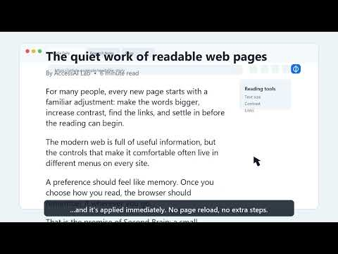

Choose.
Set your font size, contrast, motion, and spacing preferences once.
Second Brain for Chrome
Font size, contrast, reduced motion, and spacing — remembered and applied as you browse.
Add to Chrome
See Second Brain in action
The web keeps asking you to adapt
95.9%
You shouldn’t have to fix your setup on every site yourself.
How it works
Set your font size, contrast, motion, and spacing preferences once.
Move through the web as usual.
Your saved preferences apply automatically.
What it changes. What it doesn’t.
Second Brain does not repair broken page code such as missing alt text or labels.
It does not use AI; AI lives only in the separate AccessAI Checker.
Browser zoom and operating system settings still matter, and browser-restricted pages may prevent extension changes.
Available now
Second Brain is live in the Chrome Web Store.